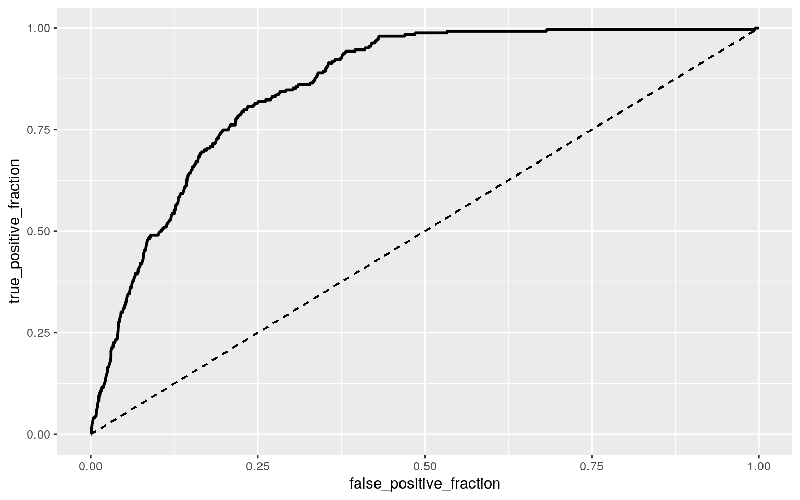

January 1, 0001
Gyeori Won (gw6936)
Introduction
The dataset chosen for this project is stroke and this dataset shows 11 clinical features for predicting stroke events. There are originally 5110 observations with 12 attributes: id, gender, age, hypertension, heart disease, ever married, work type, residence type, avg glucose level, bmi, smoking status, and stroke. However, there were some rows without variables, and these rows were dropped to result in a final dataset with 4909 observations. The id is a unique identifier of each patient, age is a numeric variable, and gender is a categorical variable that tells whether the patient is a male or female. Hypertension, heart disease, and stroke are numeric binary variables, with 1 meaning the patient has a hypertension, heart disease, and stroke, and 0 meaning he/she does not. Ever married is a categorical variable that shows the marriage status of each patient. Work type is a categorical variable which shows the occupation status of each patient as being children, government worker, never worked, self-employed, or private. The residence type is another categorical variable that shows whether the patient is from an urban or rural residence. The avg glucose level and bmi are numerical variables that give insight to the average glucose level and the body mass index of each patient. Smoking status is a categorical variable that is distinguished by formerly smoked, never smoked, smokes, or unknown, in which unknown means that the information is unavailable for that patient.
library(tidyverse)
library(cluster)
library(ggplot2)
stroke <- read_csv("stroke.csv")
# drop rows without data
stroke <- stroke %>% drop_na()
head(stroke)## # A tibble: 6 x 12
## id gender age hypertension `heart disease` `ever
married` `work type` `residence type`
## <dbl> <chr> <dbl> <dbl> <dbl> <chr> <chr> <chr>
## 1 9046 Male 67 0 1 Yes Private Urban
## 2 31112 Male 80 0 1 Yes Private Rural
## 3 60182 Female 49 0 0 Yes Private Urban
## 4 1665 Female 79 1 0 Yes Self-emplo… Rural
## 5 56669 Male 81 0 0 Yes Private Urban
## 6 53882 Male 74 1 1 Yes Private Rural
## # … with 4 more variables: `avg glucose level` <dbl>,
bmi <dbl>, `smoking status` <chr>,
## # stroke <dbl>1 - MANOVA test
library(rstatix)
group <- stroke$`work type`
DVs <- stroke %>% select(age, `avg glucose level`, bmi)
# Test multivariate normality for each group (null:
# assumption met)
sapply(split(DVs, group), mshapiro_test)## children Govt_job Never_worked Private Self-employed
## statistic 0.8931384 0.9460166 0.8696865 0.911635
0.9631404
## p.value 3.603958e-21 2.210924e-14 0.007723588
1.157509e-37 4.63647e-13# Optionally view covariance matrices for each group
lapply(split(DVs, group), cov)## $children
## age avg glucose level bmi
## age 20.577935 4.526234 7.999032
## avg glucose level 4.526234 663.215447 8.884161
## bmi 7.999032 8.884161 20.617404
##
## $Govt_job
## age avg glucose level bmi
## age 234.091746 167.1962 6.217531
## avg glucose level 167.196240 2247.7277 40.703897
## bmi 6.217531 40.7039 47.877748
##
## $Never_worked
## age avg glucose level bmi
## age 5.4891775 -4.722424 0.6484848
## avg glucose level -4.7224242 823.525364 -5.3423203
## bmi 0.6484848 -5.342320 55.3797403
##
## $Private
## age avg glucose level bmi
## age 337.27267 196.37502 12.44891
## avg glucose level 196.37502 2005.18816 47.72675
## bmi 12.44891 47.72675 57.49678
##
## $`Self-employed`
## age avg glucose level bmi
## age 289.120864 149.35321 -6.395515
## avg glucose level 149.353211 2644.18824 72.908243
## bmi -6.395515 72.90824 44.725182# MANOVA
man1 <- manova(cbind(age, `avg glucose level`, bmi) ~ `work type`,
data = stroke)
summary(man1)## Df Pillai approx F num Df den Df Pr(>F)
## `work type` 4 0.54294 270.91 12 14712 < 2.2e-16 ***
## Residuals 4904
## ---
## Signif. codes: 0 '***' 0.001 '**' 0.01 '*' 0.05 '.' 0.1
' ' 1# ANOVA
summary.aov(man1)## Response age :
## Df Sum Sq Mean Sq F value Pr(>F)
## `work type` 4 1164201 291050 1071 < 2.2e-16 ***
## Residuals 4904 1332662 272
## ---
## Signif. codes: 0 '***' 0.001 '**' 0.01 '*' 0.05 '.' 0.1
' ' 1
##
## Response avg glucose level :
## Df Sum Sq Mean Sq F value Pr(>F)
## `work type` 4 129397 32349 16.6 1.609e-13 ***
## Residuals 4904 9556650 1949
## ---
## Signif. codes: 0 '***' 0.001 '**' 0.01 '*' 0.05 '.' 0.1
' ' 1
##
## Response bmi :
## Df Sum Sq Mean Sq F value Pr(>F)
## `work type` 4 61482 15370.4 312.41 < 2.2e-16 ***
## Residuals 4904 241275 49.2
## ---
## Signif. codes: 0 '***' 0.001 '**' 0.01 '*' 0.05 '.' 0.1
' ' 1stroke %>% group_by(`work type`) %>% summarize(mean(age), mean(`avg glucose level`),
mean(bmi))## # A tibble: 5 x 4
## `work type` `mean(age)` `mean(\`avg glucose level\`)`
`mean(bmi)`
## <chr> <dbl> <dbl> <dbl>
## 1 children 6.88 94.0 20.0
## 2 Govt_job 50.7 107. 30.5
## 3 Never_worked 16.2 96.0 25.5
## 4 Private 45.2 106. 30.3
## 5 Self-employed 59.9 112. 30.2# post-hoc t test
pairwise.t.test(stroke$bmi, stroke$`work type`, p.adj = "none")##
## Pairwise comparisons using t tests with pooled SD
##
## data: stroke$bmi and stroke$`work type`
##
## children Govt_job Never_worked Private
## Govt_job < 2e-16 - - -
## Never_worked 0.00029 0.00108 - -
## Private < 2e-16 0.48193 0.00153 -
## Self-employed < 2e-16 0.40976 0.00210 0.74449
##
## P value adjustment method: nonepairwise.t.test(stroke$`avg glucose level`, stroke$`work type`,
p.adj = "none")##
## Pairwise comparisons using t tests with pooled SD
##
## data: stroke$`avg glucose level` and stroke$`work type`
##
## children Govt_job Never_worked Private
## Govt_job 5.3e-08 - - -
## Never_worked 0.83169 0.23739 - -
## Private 8.7e-10 0.38353 0.30874 -
## Self-employed 3.5e-15 0.03363 0.08683 0.00017
##
## P value adjustment method: none# type 1 error
1 - 0.95^20## [1] 0.6415141# bonferroni correction
pairwise.t.test(stroke$`avg glucose level`, stroke$`work type`,
p.adj = "bonferroni")##
## Pairwise comparisons using t tests with pooled SD
##
## data: stroke$`avg glucose level` and stroke$`work type`
##
## children Govt_job Never_worked Private
## Govt_job 5.3e-07 - - -
## Never_worked 1.0000 1.0000 - -
## Private 8.7e-09 1.0000 1.0000 -
## Self-employed 3.5e-14 0.3363 0.8683 0.0017
##
## P value adjustment method: bonferronipairwise.t.test(stroke$bmi, stroke$`work type`, p.adj = "bonferroni")##
## Pairwise comparisons using t tests with pooled SD
##
## data: stroke$bmi and stroke$`work type`
##
## children Govt_job Never_worked Private
## Govt_job <2e-16 - - -
## Never_worked 0.0029 0.0108 - -
## Private <2e-16 1.0000 0.0153 -
## Self-employed <2e-16 1.0000 0.0210 1.0000
##
## P value adjustment method: bonferroni# bonferroni adjusted significance level
0.05/20## [1] 0.0025Multivariate normality for each group was tested in order to test for the MANOVA assumptions, and the resulting p value < 0.05 proves that the assumptions are most likely not met. A one-way MANOVA was conducted to determine the effect of work on three dependent variables of age, average glucose levels, and bmi. In doing so, significant differences were found across regions for at least one of the numeric variables, Pillai trace = 0.54294, pseudo F (12, 14712) = 270.91, p < 0.001. As follow-up tests to the MANOVA, univariate ANOVAs for each of the numeric variables were conducted. The ANOVAs also showed significant results on the two dependent numeric variables. For average glucose level, it was shown that F (4, 4904) = 16.6, p < 0.0001. For bmi, it was shown that F (4, 4094) = 312.41, p < 0.0001. Post-hoc t tests were performed on the 2 ANOVAs in pairwise comparisons to determine which works differed in average glucose level and bmi. 1 MANOVA, 3 ANOVAs, and 16 t tests were done to result in 20 tests total. The overall type-I error rate was 0.6415141, and the bonferroni adjusted significance level of α = 0.05/20 = 0.0025 should be used to keep the overall type-I error rate at 0.05. Post-hoc analysis was performed with the bonferroni adjustment and the results showed that all of the pairs except for government job and children, never worked and government job, private and government job, and private and never worked, differed significantly in the average glucose level. All of the pairs except for private and government job, self-employed and government job, and self-employed and private, differed significantly in bmi when the bonferroni correction was used.
2 - Randomization test
stroke1 <- stroke %>% select(gender, bmi)
stroke1## # A tibble: 4,909 x 2
## gender bmi
## <chr> <dbl>
## 1 Male 36.6
## 2 Male 32.5
## 3 Female 34.4
## 4 Female 24
## 5 Male 29
## 6 Male 27.4
## 7 Female 22.8
## 8 Female 24.2
## 9 Female 29.7
## 10 Female 36.8
## # … with 4,899 more rowsggplot(stroke1, aes(bmi, fill = gender)) + geom_histogram(bins = 6.5) +
facet_wrap(~gender, ncol = 2) + theme(legend.position = "none")set.seed(348)
stroke1 %>% group_by(gender) %>% summarize(means = mean(bmi)) %>%
summarize(diff(means))## # A tibble: 1 x 1
## `diff(means)`
## <dbl>
## 1 -0.416# randomization test
rand_dist <- vector()
for (i in 1:5000) {
new <- data.frame(bmi = sample(stroke1$bmi), gender = stroke1$gender)
rand_dist[i] <- mean(new[new$gender == "Female", ]$bmi) -
mean(new[new$gender == "Male", ]$bmi)
}
mean(rand_dist > 0.4155212 | rand_dist < -0.4155212)## [1] 0.0686{
hist(rand_dist, main = "", ylab = "")
abline(v = c(-0.4155212, 0.4155212), col = "red")
}A randomization test for the mean difference of bmi based on gender is conducted. The null hypothesis is that the mean bmi are the same for female and male patients. The alternative hypothesis is that the mean bmi are different for female and male patients. The two tailed p-value for the randomization test is p = 0.0686. Since p > 0.05, it can be concluded that there is not a significance difference in mean charges between female and male patients, and we fail to reject the null hypothesis.
3 - Linear Regression Model
# mean centering numeric variables
stroke$avgglucoselevel_c <- (stroke$`avg glucose level` - mean(stroke$`avg glucose level`,
na.rm = T))
stroke$bmi_c <- (stroke$bmi - mean(stroke$bmi, na.rm = T))
# linear regression
fit <- lm(avgglucoselevel_c ~ bmi_c * gender, data = stroke)
summary(fit)##
## Call:
## lm(formula = avgglucoselevel_c ~ bmi_c * gender, data =
stroke)
##
## Residuals:
## Min 1Q Median 3Q Max
## -122.82 -28.25 -12.54 11.22 166.59
##
## Coefficients:
## Estimate Std. Error t value Pr(>|t|)
## (Intercept) -2.1212 0.8114 -2.614 0.00897 **
## bmi_c 0.9387 0.1000 9.383 < 2e-16 ***
## genderMale 5.2194 1.2679 4.117 3.91e-05 ***
## bmi_c:genderMale 0.1688 0.1644 1.027 0.30469
## ---
## Signif. codes: 0 '***' 0.001 '**' 0.01 '*' 0.05 '.' 0.1
' ' 1
##
## Residual standard error: 43.67 on 4905 degrees of
freedom
## Multiple R-squared: 0.03433, Adjusted R-squared: 0.03373
## F-statistic: 58.12 on 3 and 4905 DF, p-value: < 2.2e-16# plot
ggplot(stroke, aes(x = bmi_c, y = avgglucoselevel_c, group = gender)) +
geom_point(aes(color = gender)) + geom_smooth(method = "lm",
aes(color = gender))
# check assumptions of linearity, homoskedasticity
resids <- fit$residuals
fitvals <- fit$fitted.values
ggplot() + geom_point(aes(fitvals, resids)) + geom_hline(yintercept = 0,
color = "red")
library(sandwich)
library(lmtest)
bptest(fit)##
## studentized Breusch-Pagan test
##
## data: fit
## BP = 221.19, df = 3, p-value < 2.2e-16# normality
ks.test(resids, "pnorm", mean = 0, sd(resids))##
## One-sample Kolmogorov-Smirnov test
##
## data: resids
## D = 0.16249, p-value < 2.2e-16
## alternative hypothesis: two-sided# robust standard errors
coeftest(fit, vcov = vcovHC(fit))##
## t test of coefficients:
##
## Estimate Std. Error t value Pr(>|t|)
## (Intercept) -2.12122 0.77665 -2.7312 0.006332 **
## bmi_c 0.93868 0.11013 8.5232 < 2.2e-16 ***
## genderMale 5.21945 1.29410 4.0333 5.584e-05 ***
## bmi_c:genderMale 0.16879 0.20565 0.8207 0.411833
## ---
## Signif. codes: 0 '***' 0.001 '**' 0.01 '*' 0.05 '.' 0.1
' ' 1# proportion of variation in outcome
(sum((stroke$avgglucoselevel_c - mean(stroke$avgglucoselevel_c))^2) -
sum(fit$residuals^2))/sum((stroke$avgglucoselevel_c - mean(stroke$avgglucoselevel_c))^2)## [1] 0.03432553For female patients, for every 1 unit increase of bmi, average glucose level increases by 0.9387 (significant, t = 9.383, df = 4905, p < 0.0000000000000002). When controlling for bmi, males have average glucose levels that are 5.2194 greater than females (significant, t = 4.117, df = 4905, p = 0.0000391). The slope for bmi on average glucose level is 0.1688 greater for males compared to females (interaction is not significant, t = 1.027, df = 4905, p = 0.30469). The assumptions of linearity, normality, and homoskedasticity are not met becaue p < 0.05. Regression is then recomputed using the robust standard errors. When controlling for gender, there is a significant interaction between bmi and average glucose levels (t = 8.5232, p < 0.00000000000000022). There are no changes in significance after the robust SEs. The model explains 0.03432553 of the variation in the outcome.
4 - Bootstrapped Linear Regression Model
# linear regression
fit <- lm(avgglucoselevel_c ~ bmi_c * gender, data = stroke)
summary(fit)##
## Call:
## lm(formula = avgglucoselevel_c ~ bmi_c * gender, data =
stroke)
##
## Residuals:
## Min 1Q Median 3Q Max
## -122.82 -28.25 -12.54 11.22 166.59
##
## Coefficients:
## Estimate Std. Error t value Pr(>|t|)
## (Intercept) -2.1212 0.8114 -2.614 0.00897 **
## bmi_c 0.9387 0.1000 9.383 < 2e-16 ***
## genderMale 5.2194 1.2679 4.117 3.91e-05 ***
## bmi_c:genderMale 0.1688 0.1644 1.027 0.30469
## ---
## Signif. codes: 0 '***' 0.001 '**' 0.01 '*' 0.05 '.' 0.1
' ' 1
##
## Residual standard error: 43.67 on 4905 degrees of
freedom
## Multiple R-squared: 0.03433, Adjusted R-squared: 0.03373
## F-statistic: 58.12 on 3 and 4905 DF, p-value: < 2.2e-16# bootstrapped SEs
resids <- fit$residuals
fitted <- fit$fitted.values
resid_resamp <- replicate(5000, {
new_resids <- sample(resids, replace = TRUE)
stroke$new_y <- fitted + new_resids
fit2 <- lm(new_y ~ bmi_c * gender, data = stroke)
coef(fit2)
})
resid_resamp %>% t %>% as.data.frame %>% summarize_all(sd)## (Intercept) bmi_c genderMale bmi_c:genderMale
## 1 0.8090762 0.09977304 1.260057 0.1661396# normal SEs
coeftest(fit)##
## t test of coefficients:
##
## Estimate Std. Error t value Pr(>|t|)
## (Intercept) -2.12122 0.81136 -2.6144 0.008966 **
## bmi_c 0.93868 0.10004 9.3834 < 2.2e-16 ***
## genderMale 5.21945 1.26791 4.1166 3.909e-05 ***
## bmi_c:genderMale 0.16879 0.16442 1.0265 0.304687
## ---
## Signif. codes: 0 '***' 0.001 '**' 0.01 '*' 0.05 '.' 0.1
' ' 1# robust SEs
coeftest(fit, vcov = vcovHC(fit))##
## t test of coefficients:
##
## Estimate Std. Error t value Pr(>|t|)
## (Intercept) -2.12122 0.77665 -2.7312 0.006332 **
## bmi_c 0.93868 0.11013 8.5232 < 2.2e-16 ***
## genderMale 5.21945 1.29410 4.0333 5.584e-05 ***
## bmi_c:genderMale 0.16879 0.20565 0.8207 0.411833
## ---
## Signif. codes: 0 '***' 0.001 '**' 0.01 '*' 0.05 '.' 0.1
' ' 1The bootstrapped SEs are 0.09977304 for bmi, 1.260057 for genderMale, and 0.1661396 for bmi:genderMale. The bmi and genderMale SEs are slightly lower than the original SEs of 0.10004 for bmi and 1.26791 for genderMale, and the bmi:genderMale is slightly greater than the original SE of 0.16442 for bmi:genderMale. The robust SEs differ slightly from the bootstrapped SEs, as the bmi SE is greater at 0.11013, the genderMale SE is greater at 1.29410, and the bmi:genderMale SE is greater at 0.20565. In the bootstrapped regression, p-values can be predicted to decrease, differing from the original p-values that are < 0.0000000000000002 (significant), 0.0000391 (significant), and 0.30469 (not significant) for bmi, genderMale, and bmi:genderMale, respectively.
5 - Logistic Regression Model
# mean center age
stroke$age_c <- (stroke$age - mean(stroke$age, na.rm = T))
# logistic regression
fit3 <- glm(`heart disease` ~ avgglucoselevel_c + age_c, data = stroke,
family = binomial(link = "logit"))
summary(fit3)##
## Call:
## glm(formula = `heart disease` ~ avgglucoselevel_c +
age_c, family = binomial(link = "logit"),
## data = stroke)
##
## Deviance Residuals:
## Min 1Q Median 3Q Max
## -1.0632 -0.3159 -0.1636 -0.0730 3.8742
##
## Coefficients:
## Estimate Std. Error z value Pr(>|z|)
## (Intercept) -4.135062 0.144897 -28.538 < 2e-16 ***
## avgglucoselevel_c 0.005910 0.001156 5.114 3.16e-07 ***
## age_c 0.076313 0.005251 14.532 < 2e-16 ***
## ---
## Signif. codes: 0 '***' 0.001 '**' 0.01 '*' 0.05 '.' 0.1
' ' 1
##
## (Dispersion parameter for binomial family taken to be 1)
##
## Null deviance: 1934.6 on 4908 degrees of freedom
## Residual deviance: 1511.8 on 4906 degrees of freedom
## AIC: 1517.8
##
## Number of Fisher Scoring iterations: 7exp(coef(fit3))## (Intercept) avgglucoselevel_c age_c
## 0.01600168 1.00592760 1.07930003# confusion matrix
prob <- predict(fit3, type = "response")
pred <- ifelse(prob > 0.5, 1, 0)
table(predict = as.numeric(prob > 0.2), truth = stroke$`heart disease`) %>%
addmargins()## truth
## predict 0 1 Sum
## 0 4454 170 4624
## 1 212 73 285
## Sum 4666 243 4909# accuracy
(4454 + 73)/4909## [1] 0.9221837# sensitivity (TPR)
4454/4624## [1] 0.9632353# specificity (TNR)
73/285## [1] 0.2561404# precision (PPV)
4454/4666## [1] 0.9545649# density plot
stroke$logit <- predict(fit3, type = "link")
stroke$heartdisease1 <- as.factor(stroke$`heart disease`)
stroke %>% group_by(heartdisease1) %>% ggplot() + geom_density(aes(logit,
color = heartdisease1, fill = heartdisease1))# ROC curve
library(plotROC)
ROCplot <- ggplot(stroke) + geom_roc(aes(d = `heart disease`,
m = prob), n.cuts = 0) + geom_segment(aes(x = 0, xend = 1,
y = 0, yend = 1), lty = 2)
ROCplot
# calc AUC
calc_auc(ROCplot)## PANEL group AUC
## 1 1 -1 0.8571652When controlling for center age, for every 1 increase in average glucose level, the odds of having heart disease increases by a factor of 1.0059276 (significant). Controlling for center average glucose level, for every 1 year increase in center age, the odds of having heart disease increases by a factor of 1.07930003 (significant). A confusion matrix is conducted to produce an accuracy of 0.9221837, sensitivity (TPR) of 0.9632353, specificity (TNR) of 0.2561404, and precision (PPV) of 0.9545649. The accuracy is the proportion of correctly classified cases, sensitivity the true positive rate, specificity the true negative rate, and precision the proportion of those classified with heart disease and actually have heart disease. An ROC plot is made and the AUC is calculated to be 0.8571652, which is a good AUC predicting the prevalence of heart disease from average glucose level and age.
6 - Logistic Regression Model for all variables
# mean center bmi
stroke$bmi_c <- (stroke$bmi - mean(stroke$bmi, na.rm = T))
# logistic regression
fit4 <- glm(`heart disease` ~ avgglucoselevel_c + age_c + gender +
bmi_c + `smoking status` + `residence type`, data = stroke,
family = binomial(link = "logit"))
summary(fit4)##
## Call:
## glm(formula = `heart disease` ~ avgglucoselevel_c +
age_c + gender +
## bmi_c + `smoking status` + `residence type`, family =
binomial(link = "logit"),
## data = stroke)
##
## Deviance Residuals:
## Min 1Q Median 3Q Max
## -1.4658 -0.3085 -0.1473 -0.0603 3.8976
##
## Coefficients:
## Estimate Std. Error z value Pr(>|z|)
## (Intercept) -4.558740 0.237296 -19.211 < 2e-16 ***
## avgglucoselevel_c 0.005377 0.001212 4.436 9.18e-06 ***
## age_c 0.080813 0.005721 14.126 < 2e-16 ***
## genderMale 0.779032 0.144362 5.396 6.80e-08 ***
## bmi_c 0.003689 0.011626 0.317 0.75100
## `smoking status`never smoked -0.200877 0.181980 -1.104
0.26966
## `smoking status`smokes 0.595106 0.206717 2.879 0.00399
**
## `smoking status`Unknown -0.177945 0.224107 -0.794
0.42718
## `residence type`Urban -0.108979 0.141874 -0.768 0.44241
## ---
## Signif. codes: 0 '***' 0.001 '**' 0.01 '*' 0.05 '.' 0.1
' ' 1
##
## (Dispersion parameter for binomial family taken to be 1)
##
## Null deviance: 1934.6 on 4908 degrees of freedom
## Residual deviance: 1460.2 on 4900 degrees of freedom
## AIC: 1478.2
##
## Number of Fisher Scoring iterations: 8exp(coef(fit4))## (Intercept) avgglucoselevel_c age_c
## 0.01047525 1.00539130 1.08416804
## genderMale bmi_c `smoking status`never smoked
## 2.17936119 1.00369606 0.81801288
## `smoking status`smokes `smoking status`Unknown
`residence type`Urban
## 1.81322248 0.83698843 0.89674952# in-sample classification diagnostics
prob1 <- predict(fit4, data = "response")
class_diag(prob1, stroke$`heart disease`)## acc sens spec ppv auc
## 1 0.9504991 0.004115226 0.9997857 0.5 0.8723724# 10 fold CV
set.seed(1234)
k = 10
data <- stroke[sample(nrow(stroke)), ]
folds <- cut(seq(1:nrow(stroke)), breaks = k, labels = F)
diags <- NULL
for (i in 1:k) {
train <- data[folds != i, ]
test <- data[folds == i, ]
truth1 <- test$`heart disease`
fit5 <- glm(`heart disease` ~ avgglucoselevel_c + age_c +
gender + bmi_c + `smoking status` + `residence type`,
data = train, family = "binomial")
prob2 <- predict(fit5, newdata = test, type = "response")
diags <- rbind(diags, class_diag(prob2, truth1))
}
summarize_all(diags, mean)## acc sens spec ppv auc
## 1 0.9496845 0.004166667 0.9989366 NaN 0.8681974# LASSO
library(glmnet)
set.seed(1234)
y <- as.matrix(stroke$`heart disease`)
preds <- model.matrix(`heart disease` ~ avgglucoselevel_c + age_c +
gender + bmi_c + `smoking status` + `residence type`, data = stroke)[,
-1]
head(preds)## avgglucoselevel_c age_c genderMale bmi_c `smoking
status`never smoked
## 1 123.3848503 24.134626 1 7.7067631 0
## 2 0.6148503 37.134626 1 3.6067631 1
## 3 65.9248503 6.134626 0 5.5067631 0
## 4 68.8148503 36.134626 0 -4.8932369 1
## 5 80.9048503 38.134626 1 0.1067631 0
## 6 -35.2151497 31.134626 1 -1.4932369 1
## `smoking status`smokes `smoking status`Unknown
`residence type`Urban
## 1 0 0 1
## 2 0 0 0
## 3 1 0 1
## 4 0 0 0
## 5 0 0 1
## 6 0 0 0cv <- cv.glmnet(preds, y, family = "binomial")
lasso_fit <- glmnet(preds, y, family = "binomial", lambda = cv$lambda.1se)
coef(lasso_fit)## 9 x 1 sparse Matrix of class "dgCMatrix"
## s0
## (Intercept) -3.591568842
## avgglucoselevel_c 0.003118513
## age_c 0.049324057
## genderMale 0.234201716
## bmi_c .
## `smoking status`never smoked .
## `smoking status`smokes .
## `smoking status`Unknown .
## `residence type`Urban .# CV with LASSO
set.seed(1234)
k = 10
data <- stroke[sample(nrow(stroke)), ]
folds <- cut(seq(1:nrow(stroke)), breaks = k, labels = F)
diags <- NULL
for (i in 1:k) {
train2 <- data[folds != i, ]
test2 <- data[folds == i, ]
truth2 <- test2$`heart disease`
fit6 <- glm(`heart disease` ~ age_c, data = train2, family = "binomial")
prob3 <- predict(fit6, newdata = test2, type = "response")
diags <- rbind(diags, class_diag(prob3, truth2))
}
summarize_all(diags, mean)## acc sens spec ppv auc
## 1 0.9504992 0 1 NaN 0.8476613A logistic regression is done to predict the prevalence of heart disease from average glucose level, age, and the response variables not used yet such as gender, bmi_c, smoking status, and residence type. There is a significant result from genderMale that if the patient is a male, the odds of having heart disease increases by a factor of 2.17936119 (significant). In-sample classifications are computed to show an accuracy of 0.9504991 which is the proportion of correctly classified cases, the sensitivity (TPR) is 0.004115226 which is the true positive rate, specificity (TNR) is 0.9997857 which is the true negative rate, PPV is NaN, and AUC is 0.8723724, which is considered good. A 10 fold CV is also conducted, and the out-of-sample classification diagnostics are found to be very similar to the in-sample classifications, showing an accuracy of 0.9504992, sensitivity of 0, specificity of 1, PPV of NaN, and an AUC of 0.8476613. LASSO is performed, and the only variables that are retained are avgglucoselevel_c, age_c, and genderMale. A 10 fold CV with LASSO is conducted to give an AUC of 0.8476613, a value that is identical to the out-of-sample diagnostics. As a result, the prevalence of heart disease can be predicted from average glucose level, age, gender, bmi, smoking status, and residence type since the AUCs of all diagnostics are good.